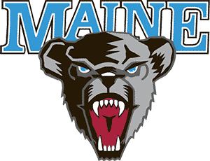

Hockey East
Northeastern
Northeastern is 7-1-1 and 6th in the NPI. Across 500 simulated seasons its median NPI finish is 5th, with a 95% range of 2nd to 12th. ELO expects about 8 wins in the next 10.
Next 10 games
- Fri, Nov 6at Vermont78%
- Sat, Nov 7at Vermont78%
- Fri, Nov 13
 at Merrimack90%
at Merrimack90% - Sat, Nov 14at Merrimack90%
- Thu, Nov 19

vs Maine92% - Fri, Nov 20vs Maine92%
- Fri, Nov 27
 at Cornell62%
at Cornell62% - Sat, Nov 28at Cornell62%
- Sun, Nov 29at Cornell62%
- Thu, Dec 3vs Boston College80%
Win chances from ELO; the dot is stronger the more lopsided the game.
Projected NPI finish
500 simulated seasons, remaining games decided by ELO win chances. Dashed line: median. Shaded: 95% range.